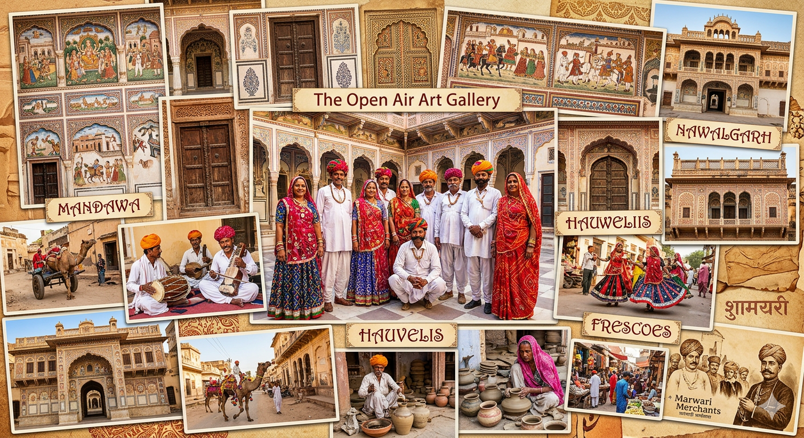

Explore the rich cultural heritage and spiritual treasures of the Shekhawati region in Rajasthan.
Welcome to Shekhawati Tourist & Spiritual Places, your premier guide to uncovering the historical, cultural, and spiritual richness of the Shekhawati region in Rajasthan. Shekhawati is globally renowned for its stunning havelis adorned with intricate frescoes, majestic forts, grand temples, and vibrant festivals that reflect the heritage of centuries.
The Shekhawati region, encompassing districts like Jhunjhunu, Sikar, Churu, Mandawa, and Nawalgarh, is often referred to as the “Open Art Gallery of Rajasthan.” Its magnificent havelis showcase the artistry, architecture, and storytelling of bygone eras, while its temples and spiritual sites attract devotees seeking divine experiences. At our platform, we aim to bring this heritage closer to travelers, history enthusiasts, and spiritual seekers alike.

Our mission is to provide comprehensive and authentic information about the most captivating tourist and spiritual destinations in Shekhawati. From centuries-old Jain and Hindu temples to the culturally rich fairs and festivals, we strive to present each site in detail, making your visit both insightful and unforgettable. By highlighting the region’s unique traditions, art forms, and historical significance, we encourage responsible tourism and cultural preservation.
Beyond the aesthetic beauty of the frescoed walls and grand architecture, Shekhawati offers spiritual serenity. The region’s temples, pilgrimage centers, and sacred spots provide a tranquil environment for reflection, devotion, and self-discovery. Our platform emphasizes the spiritual dimension of Shekhawati, ensuring visitors not only experience visual splendor but also the inner peace these places inspire.
We understand that planning a visit can be overwhelming, given the wealth of historical and spiritual sites. Therefore, Shekhawati Tourist & Spiritual Places serves as a reliable companion, offering insights, travel tips, and detailed descriptions that help you navigate the region efficiently. Whether you are a first-time visitor or a returning traveler, our resources are designed to make your journey seamless and enriching.
Our vision is to become the most trusted platform for Shekhawati tourism, combining cultural exploration with spiritual experiences. By presenting stories behind each heritage site, temple, and monument, we aim to inspire curiosity, respect, and a deep appreciation for the region’s timeless legacy.
Join us as we celebrate the artistic mastery, spiritual depth, and cultural vibrancy of Shekhawati. Let our platform guide you through an extraordinary journey that connects history, art, and devotion in the heart of Rajasthan.
If you have questions, suggestions, or want more information about Shekhawati’s tourist and spiritual destinations, we are always happy to help. Reach out to us through the following channels:
We look forward to helping you explore the heritage, culture, and spiritual treasures of Shekhawati.